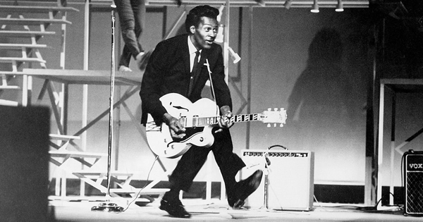

¿Qué es este sitio web?
El objetivo de este sitio web, es compartir información veridica de forma agradable e intuitiva para los lectores. Es un trabajo de un fan del Rock y Metal, para compartir traducciones de letras, noticias sobre música y algunas clasificaciones de temas con la comunidad hispana que orbita alrededor de este estilo de música.
¿Te interesa el origen de estos genéros músicales? A continuación te los explicamos:
Los origenes del Rock and roll
El rock and roll como tal, tiene sus orígenes entre 1920 y 1940, pudiendo observarse, sin embargo, elementos propios de este género en producciones de rhythm and blues que datan incluso de los años 1920. En los orígenes del rock and roll existía una combinación de elementos los blues, boogie woogie, jazz y rhythm. El género también estaba influenciado por géneros tradicionales como el Hillbilly, la música folk de Irlanda, la música gospel y la música country. Regresando aún más atrás en el tiempo, se puede trazar el linaje del rock and roll hasta el antiguo distrito Five Points de Nueva York a mediados del siglo XIX, que fue el escenario de la primera fusión entre la música africana fuertemente rítmica y los géneros musicales europeos.
En la década de 1940, el término "rock and roll" se empleaba ya en las valoraciones de grabaciones discográficas del periodista y columnista de Billboard Mauri Orodenker. En la edición del 30 de mayo de 1942, por ejemplo, describió la voz de Rosetta Tharpe en la reedición de "Rock Me" como "un canto espiritual de rock and roll". R&B (acuñado en 1949) era un término demasiado ambiguo, porque R&B era una categoría que incluía todas las formas de música negra excepto el jazz y el gospel. Cualquier otro estilo era considerado R&B pero como esta música rocking era nueva y revolucionaria, necesitaba un nuevo nombre, así que los disc jockeys, liderados por uno de Cleveland llamado Alan Freed, comenzaron a llamarlo rock and roll. Esto sucedió en 1951 y muchos DJ's usaron ese término, que también era utilizado para comercializar la música a una audiencia más amplia.
Hubo una gran explosión entre 1954 y 1960. De repente, Elvis, Bill Haley, Chuck Berry, Little Richard y otros estaban tocando rock and roll perfectamente desarrollado, como si hubiese surgido de la nada. Algunos lo describen como un momento mágico en un estudio de grabación, con músicos pasando el rato durante un descanso y tocando algo no ensayado, y de repente, accidentalmente inventan un tipo de música completamente nueva. Cuando el rock and roll se arraigó por completo tras la llegada del rockabilly, y más aún con la invasión británica de principios de los años 1960, se convirtió en una música basada en la guitarra, y los guitarristas, buscaban de modo natural a otros guitarristas como pioneros de la música. Así, las compañías discográficas se mostraron interesadas en reeditar el material antiguo en tanto y cuanto hubiese un guitarrista al frente. Pero el rock and roll de antes de 1954 estaba basado en el saxofón, con muy poca guitarra. Y mientras el saxo se había retirado virtualmente del rock and roll a partir de 1956, muchas de las estrellas primigenias permanecieron olvidadas. Lo mismo con el piano, que fue probablemente el instrumento en el que se tocó rock and roll por primera vez. A mediados de los años 1950, cuando el rock and roll era popular, cada compañía discográfica importante tenía unas cuantas megaestrellas que intentaban vender. Y luego surgieron los Beatles, grupo que marcaría una revolución, no solo en el aspecto musical, si no también en la moda, y la sociedad misma. Con ellos se daría el fenómeno conocido como "la ola inglesa". El movimiento a su vez influyó en muchas agrupaciones estadounidenses (como los byrds) alcanzaría su punto más álgido en 1965 y 1967.
Información procedente de Wikipedia, creditos correspondientes.Los origenes del Heavy metal
El heavy metal, o simplemente metal (pronunciado como métal, es un género musical que nació a finales de los años sesenta y principios de los setenta en el Reino Unido y también en los Estados Unidos, cuyos orígenes provienen del blues rock, hard rock y del rock psicodélico. Se caracteriza principalmente por sus guitarras fuertes y distorsionadas, ritmos enfáticos, los sonidos del bajo y la batería son más densos de lo habitual y la voz es generalmente aguda o gutural.

Según el historiador de música Ian Christe su definición provendría del lenguaje hippie; heavy sería un sinónimo de potente o profundo y metal describiría un estado de ánimo como la pesadez. En ese sentido la palabra heavy haría referencia a las bandas que tocaban con una amplificación mayor a lo que interpretaba la música popular de mediados de los sesenta. En cuanto a su contexto musical las primeras referencias al heavy metal sería el álbum debut de Iron Butterfly llamado precisamente Heavy, y su primer uso en las líricas de una canción sería en «Born to Be Wild» de los estadounidenses Steppenwolf publicado en junio de 1968
Hasta el día de hoy no existe un consenso claro de parte de los críticos, para definir cual fue la primera banda del heavy metal. Muchos de los críticos estadounidenses dan su apoyo a Led Zeppelin, mientas que los comentaristas británicos dan crédito a Black Sabbath y Deep Purple. También y en otros casos se nombran a Iron Butterfly, Steppenwolf, Vanilla Fudge o Blue Cheer como los pioneros del género. En lo que si llegan a coincidir es que en 1968 el sonido que se llamaría heavy metal empezó a crearse. En enero de ese año los estadounidenses Blue Cheer publicaron su sencillo «Summertime Blues» —cover de Eddie Cochran— que se extrajo de su álbum debut Vincebus Eruptum y que es considerado como el primer registro del verdadero heavy metal.73 En el mismo mes Steppenwolf debutó con su álbum homónimo y que incluyó el sencillo «Born to Be Wild» que hace alusión a las motocicletas con el término «heavy metal thunder». Ya en junio Iron Butterfly lanzó el disco In-A-Gadda-Da-Vida que contenía el éxito del mismo nombre y que también se postuló como una de las primeras grabaciones del género.
Información procedente de Wikipedia, creditos correspondientes.